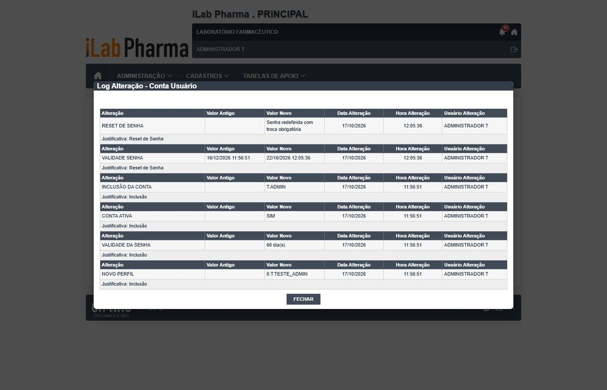
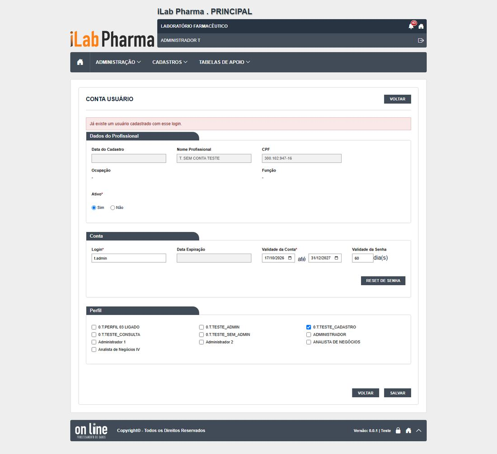
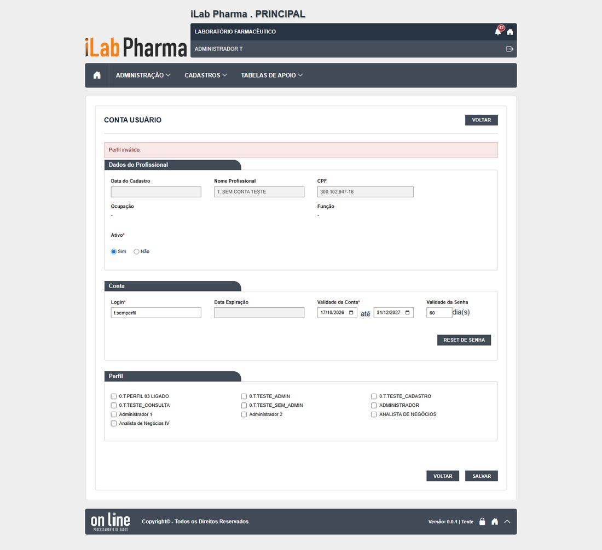
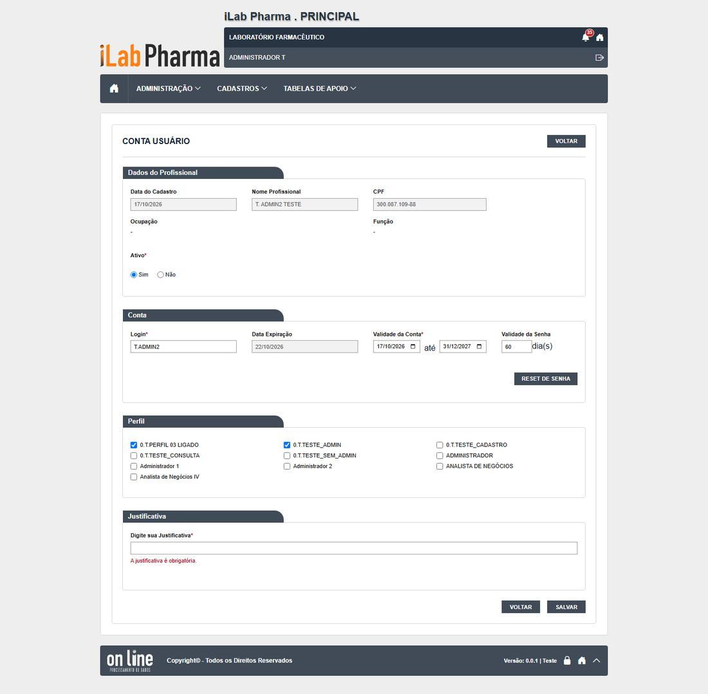
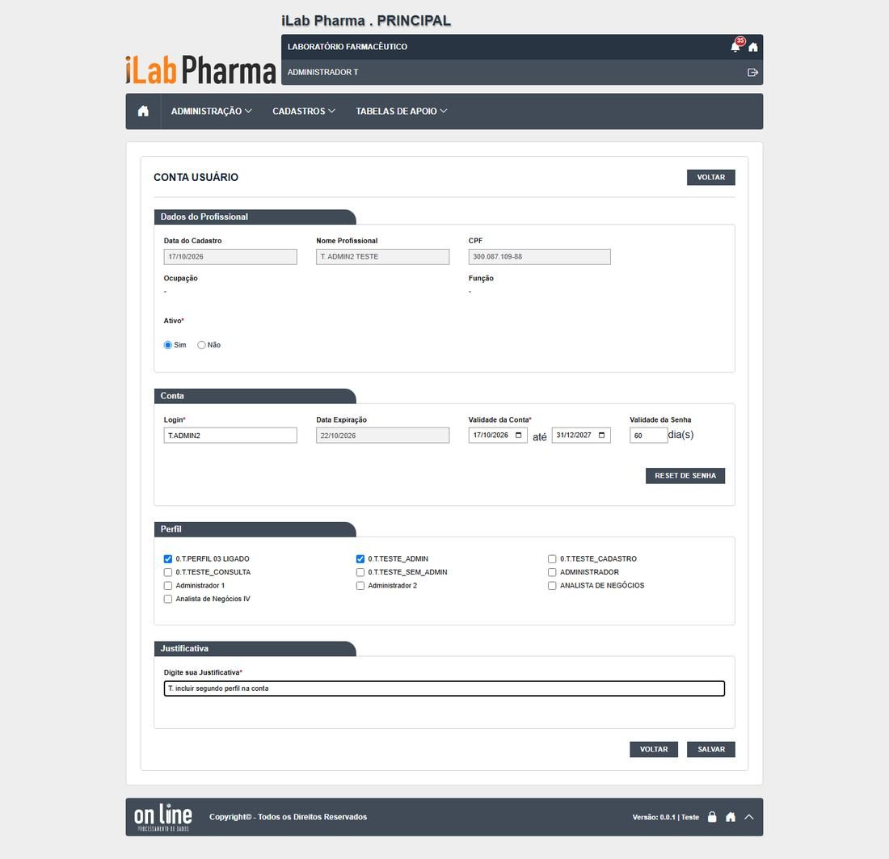
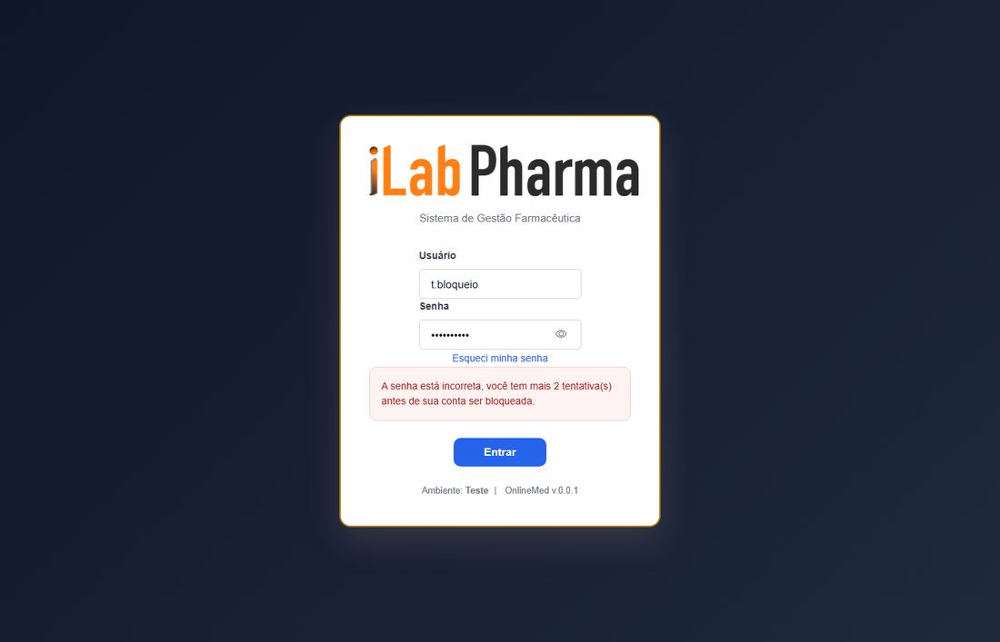
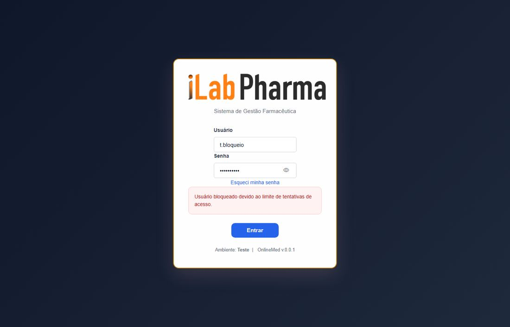
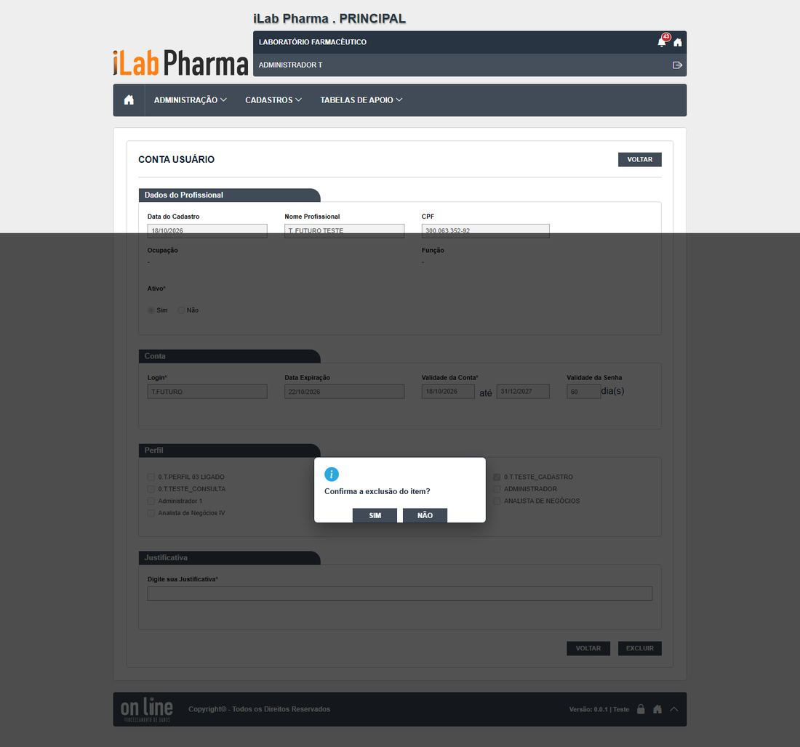

Roteiro para quem vai testar a tela Conta usuário (menu Administração) na versão nova. Use o ambiente de teste da versão nova; o sistema entregue só entra se um resultado parecer estranho.
Antes de começar
- Usuário com
0.T.TESTE_ADMIN. - Um profissional de teste (sem conta) para editar a conta.
- Todo registro novo começa com
T.(se o ponto falhar, useT-e anote o campo). - Dados de teste ficam no ambiente: não apague o que não criou.
Passos
| # | O que fazer | O que deve aparecer | Caso do plano |
|---|---|---|---|
| 1 | Abrir Administração > Conta usuário e pesquisar o profissional de teste. | A lista não tem Incluir; o ícone Editar abre a conta. | CT-PRI-040 |
| 2 | Preencher login e validade, escolher um perfil e salvar. | Conta criada. Anote a senha provisória (aparece na tela do administrador). | CT-PRI-040 |
| 3 | Informar um login que já existe (em maiúsculas e minúsculas). | "Já existe um usuário cadastrado com esse login." | CT-PRI-042 |
| 5 | Informar validade final menor que a inicial. | "A validade final não pode ser menor que a validade inicial." | CT-PRI-041 |
| 6 | Adicionar um segundo perfil sem justificativa e depois com. Retirar. Abrir o histórico. | Exige justificativa; histórico com NOVO PERFIL e PERFIL EXCLUÍDO. | CT-PRI-046 |
| 7 | Abrir a caixa de perfis e contar quantos aparecem. | Hoje 10 de 21 ativos (N-006). | DV-PRI-N-006 |
| 8 | Fazer o Reset de senha de uma conta de teste. | Pede confirmação, não pede justificativa, vale na hora. Anote a validade. | RG-PRI-006 |
| 9 | Excluir uma conta de teste sem justificativa e depois com. | Sem justificativa o servidor recusa (a tela pode não mostrar mensagem). | CT-PRI-049 |
Capturas de tela da versão nova
Imagens da rodada de testes de 17/10/2026, na ordem dos passos. Clique para ampliar.
Passo 1

Passo 2
Passo 3

Passo 4

Passo 6


Passo 8



Passo 9


Como registrar
Para cada passo anote: o que apareceu na tela (copie a mensagem), a classe (Igual, Regressão, Melhoria, Novo ou Bloqueado), o defeito (se houver) e o nome da captura. Se um caso ficou Bloqueado, diga o motivo (usuário, perfil ou dado que faltou).
Se algo parecer uma falha de permissão, confira primeiro a Conta usuário e o Perfil do usuário antes de concluir que a tela falhou.
Tabela de resultados
A coluna Resultado do caso em 17/10/2026 traz o que a tela mostrou, para o caso do plano que o passo cobre (passos do mesmo caso repetem o resultado). Refaça o passo e use a última coluna para o seu resultado: se for diferente, anote a classe (Igual, Regressão, Melhoria, Novo ou Bloqueado) e o defeito.
| Passo | Resultado do caso em 17/10/2026 | Classe | Defeito | Captura | Seu resultado |
|---|---|---|---|---|---|
| 1 | |||||
| 2 | |||||
| 3 | "Já existe um usuário cadastrado com esse login." | Igual | — | CT-PRI-042-passo-1 |
|
| 4 | "Perfil inválido." (mensagem menos clara) | Igual | — | CT-PRI-043-passo-1 |
|
| 5 | |||||
| 6 | Exige justificativa; histórico com NOVO PERFIL e PERFIL EXCLUÍDO e a linha-ruído de reset | Igual | DV-PRI-005, N-006 | CT-PRI-046-passo-1-sem-justificativa, CT-PRI-046-passo-2-add-perfil |
|
| 7 | |||||
| 8 | O Reset de senha feito pelo administrador desbloqueia o usuário (veja também a tela de Login) | Melhoria | — | RG-PRI-006-senha-certa-apos-bloqueio, RG-PRI-006-tentativa-3 |
|
| 9 | O servidor recusa (400), mas a tela só fecha a pergunta, sem mensagem | Igual | N-003 | CT-PRI-049-passo-3-conta-modal-sem-justificativa, CT-PRI-049-passo-3-conta-sem-justificativa |